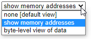

Pointer Assignment

It is also possible to assign new values to the pointer variables themselves. Look at this animation. Before you do, change the drop-down list so that it says "show memory addresses".
Line 6 makes a copy of the direct value (that is the address) stored in p2 and copies it into the variable p1. Afterwards, both variables now point to the same location.
If you draw your diagrams using arrows, keep in mind that copying a pointer replaces the destination pointer with a new arrow that points to the same location as the old one. Thus p1 = p2 changes the arrow leading from p1 so it points to the same location as the arrow originating from p2.
It is important to distinguish the assignment of a pointer from that of a value. Pointer assignment, p1 = p2, makes p1 and p2 point to the same location. By contrast, value assignment, *p1 = *p2, copies the value from the location pointed to by p2 into the location pointed to by p1.
 This course content is offered under a
CC
Attribution Non-Commercial license. Content in this course
can be considered under this license unless otherwise noted.
This course content is offered under a
CC
Attribution Non-Commercial license. Content in this course
can be considered under this license unless otherwise noted.